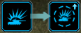
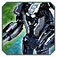
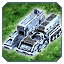
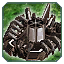

О патче
Всё меняется!
Всем Привет! Это наш ГАФ баланс. Все внесенные изменения могут быть изменены повторно.
Дисклеймер: Внесенные здесь изменения могут быть нарушены или иметь непредвиденные побочные эффекты, если вы с чем-то столкнетесь, пожалуйста, сообщите об этом в отдел баланса на
сайте. Игровые Баги репортить сюда
(канал на сервере GAF Discord)
Все изменения, которые в настоящее время внесены в GAF, позволяют нам оценить новый баланс в реальных играх.
Баланс-команда: Isakentyi, Angel и Sticky
Баланс патч 7 «Aeonigma»
В этом патче мы переосмыслили улучшения командиров и поменяли их по слотам! Изменили эксперементальные юниты. Вернули в игру Т1 ганшип за кибран. Переделали Т2 и Т3 подлодки. Сделали
комфортнее игру за Темпеста. Привели в норму перебаффанные юниты. Все изменения ниже по списку!
БМК (ACU)
 БМК ОФЗ
БМК ОФЗ
Для командиров, любящих быть в центре битвы! Эти усиления, в лейте, превратят вашего командира в грозного бойца на передовой. Почувствуйте прилив адреналина, сокрушая врагов и возглавляя
атаку! Эти улучшения – ваш билет к доминированию!
-
Изменения
-
Добавили новый апгрейд для гана! Этот апгрейд даст возможность ощущать себя лучше в лейт гейме. 
- Цена по энергии:
0 120000
- Цена по массе:
0 2100
- Время апгрейда:
0 3500
- Урон:
0 100
- Скорострельность:
0 1.5
- Сплеш:
0 1
-
Добавили новый апгрейд для персонального щита! Улучшает скорость регенерации щита и при получении урона нет задержки на восстановление. Работает как нано репеер.

- Цена по энергии:
0 70000
- Цена по массе:
0 2100
- Время апгрейда:
0 2100
- Старт регенерации после получения урона:
2 0
- Скорость регенерации:
0 100
- Перезарядка щита после сбития:
0 60
-
Сделали дронов дороже
- Цена дронов по массе:
160 300
 БМК ЭОН
Переосмыслили “Хронодемпфер” – теперь это крутое улучшение на командире, которое никого не оставит равнодушным. Убрали бессмысленное разделение гана на два апгрейда. Дали возможность
играть Эон командиром в лейте.
-
Изменения "Хроно"
- Стан:
True False
- Замедление скорости передвижения и скорости атаки:
false true
- Цена по энергии:
52500 60375 (+15%)
- Цена по массе:
1750 2100 (+20%)
- Теперь вместо стана , "Хроно", замедляет вражеские юниты на 80%.
-
Изменения Щитов
-
Изменения Гана
 БМК Кибран
БМК Кибран
Вернули лазер, поменяли слоты. Теперь есть возможность спрятать командира и сделать РАС.
-
Изменения
- ДПС лазера:
3000 4000
- РАС перекочевал из спины в руку.
Ленд
 Обсидиан
Обсидиан
Сплеш изменен.
 Яшавох
Яшавох
Сплеш изменен.
 Вагнер
Вагнер
Юнит баффнут.
-
Изменения
- Сплеш от ракеты:
0 1.4
- Скорость под водой:
3.6 4.8
- Стелс под водой:
false true
- Скорострельность торпед:
1/4с 1/5с
 Острие
Нерф. Из-за низкой цены спамили ММЛ. Сделали дороже по всем ресурсам. Это вспомогателньый юнит, а не основной.
-
Изменения
- Цена по массе:
400 550
- Цена по энергии:
3000 5000
- Время постройки:
2400 3400
Флот
Геспер
Изменили анти-торпедную систему.
-
Изменения
- Минимальный радиус торпедной системы:
10 5
- Максимальный радиус торпедной системы:
32 25
Барракуда
Изменили анти-торпедную систему.
-
Изменения
- Количество захватываемых целей:
3 2
- Радиус захвата:
5 10
- Максимальный радиус торпедной системы:
25 20
- Количество снарядов:
1 2
- Скорострельность:
1/20 сек 1/10 сек
Ятсу
Ребаланс Т3 сабхантера.
-
Изменения
- Урон торпед:
380 270
- Задержка между выстрелами:
1 0.8
- Количество торпед в залпе:
4 3
- Скорость торпед:
7.5 7.9
- Скорострельность:
1/5 с 1/3 с
- Анти-торпедная система
- Минимальный радиус:
0 5
- Максимальный радиус:
32 22
- Время жизни снаряда:
1.5 2.5
- Скорострельность:
1/10 с 1/8 с
Аир
Фигляр
Ребаланс Т1 штурмовика. Юнит был дорогой и невыгодный. Теперь это хороший харасс юнит.
-
Изменения
- Цена по массе:
170 70
- Цена по энергии:
4250 2170
- Время постройки:
850 440
- Скорость полета:
10 11
- ДПС:
50 27
- НР:
350 165
Командирский дрон
Сделали более играбельным юнитом.
-
Изменения
- Стоимость по массе:
160 300
- Скорость полета:
4 7
- НР:
50 75
- БП:
5 10
- Скорость постройки:
40с 35с
Геймэндеры
 Скатис
Скатис переделан. Посмотрим как проявит себя.
-
Изменения
- Скорость передвижения:
1.5 2
- Скорость развертывания/свёртывания:
2.5 5
- Скорострельность:
1/10 с 1/12 с
- Количество снарядов:
20 12
- Урон:
1300 1700
- Радиус разлета снарядов:
70 40
Экспы
Буря/Темпест
Изменили анимацию зарядки снаряда. Теперь Темпест не будет терять выстрел при изменении цели.
Паук
Стал более быстрым и маневренным.
-
Изменения
- Скорость передвижения:
2.5 2.8
- Скорость поворота корпуса:
25 32
- Скорость поворота башни:
40 45
Итота
Претерпел нерф. Некоторые игроки абузили реверс Итоты – исправлено.
-
Изменения
- Ходьба назад:
none 0
- Исправили баг санаряда.
Колосс
Претерпел бафф. Связанно это с тем, что при равном количестве Т3 юнитов, против Итоты и Колосса, Итота оставалась в живых, а Колосс нет. В дуэлях 5 на 5 Итоты выносят Колоссов. Все
изменения обсуждаемы, проверим в играх. Все можно вернуть.
-
Изменения
- Скорость притяжения рук:
1/2 с 1/1 с
- Дальность атаки:
40 41
- Угол поворота головы:
70 90
- Дальность притяжения рук:
41 42